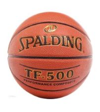

Piłki
Firm produkujących piłki do koszykówki jest dużo tak jak i modeli. Dlatego jeżeli zastanawiasz się jaką piłkę wybrać na początek to dobrze trafiłeś. Gram w koszykówkę zaczołem grać w czerwcu 2021 roku i począwszy od tamtego czasu grałem różnymi piłkami. Na początek marki na, które powinnieneś/aś zwrócić uwagę to Spalding, Wilson i Molten. Oczywiście podstawową kryterią kupna piłki jest to czy będzie ona wykorzystywana na dworze (outdoor) czy na hali (indoor). Piłka może być wykonana ze skóry lub z gumy. Tutaj pojawia się jeden problem, ponieważ piłka ze skóry będzie się szybciej ścierać niż piłka gumowa, no i ta druga zachowa dłużej dobry chwyt (grip). Pytałem wiele ray znajomych no i niektórzy twierdzą, że nawet startą skórzaną piłką lepiej im się gra niż gumową. Sam posiadam skórzaną piłkę no i nie narzekam, oczywiście starła się bo mam ją rok no ale dalej nią się dobrze gra, więc to musi być indywidualna decyzja osoby kupującej. Ceny piłek gumowch zawsze są niższe.
Spalding
Miałem okazje grać wieloma płkami od tej marki. Zarówno wysokimi modelami jak i tymi niższymi. Jeśli chodzi o piłki gumowe to są dobrej jakości. Modele gumowe najbardziej znanej lini spaldinga czyli TF to: TF-50, TF-150. Wraz z wzrastaniem liczby wzrazta cena i jakość. Najwięcej grałem modelami piłek skórzanych Spadling sprzed dwóch lat. Niestety pozostało bardzo mało egzemplarzy. Polecam piłkę: TF-500 i TF-1000, są super i bardzo dobrze się nimi gra. Zeszłorocze modele różnią się budową skóra wydaje się być twardsza. Również są dobre (TF-500 Excel, TF-1000 precision).
Wilson
W Polsce nie ma oficjalnej dystrybucji piłek do kosza, dlaego zamawiając przez internet można natrwfić na pdróbę. Myślę, że bezpieczniejszy będzie zakup w klepie stacjonarnym. Nie mmiałem okazji grać tymi piłkami.
Molten
Ta mara pozytywnie mnie zaskoczyła. Grałem tylko jednym modelem piłki Molten, dlatego ta opinia jest tylko o nim. Naprawdę świetna piłka, dobry grip nawet na outdoor. Niestety jest dosyć droga i myślę, że na początek lub po prostu na outdoor lepszym zakupem będzie jakiś tańszy Spalding. Niestety nie pamiętam modelu piłki recenzowanej.

Ciekawostki ze świata koszykóki - Strona w sieci od 2022r. © Wszelkie prawa zastrzeżone.